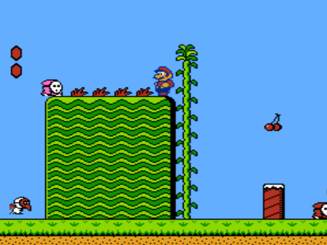
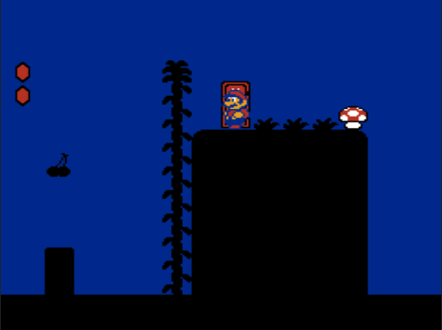

Subspace?!?
That sounds like math!

Normal value programming
 A bottle of type programming!
A bottle of type programming!
 Where does this go?
Where does this go?

SUB-CON!
val a = "a string"
Subspace?!?
That sounds like math!
A bottle of type programming!
Where does this go?
Use a spacebar or arrow keys to navigate